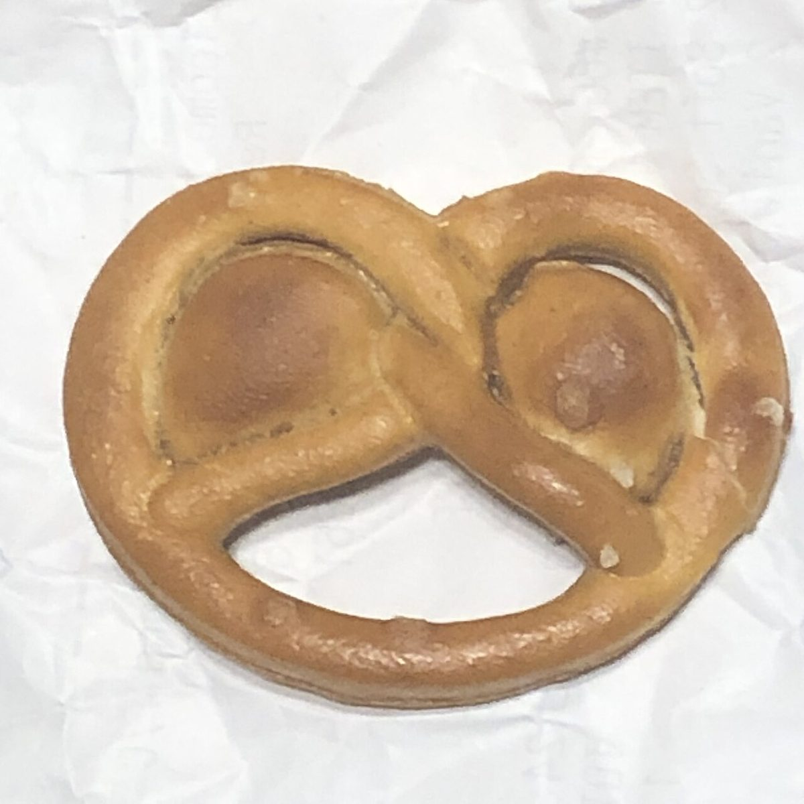
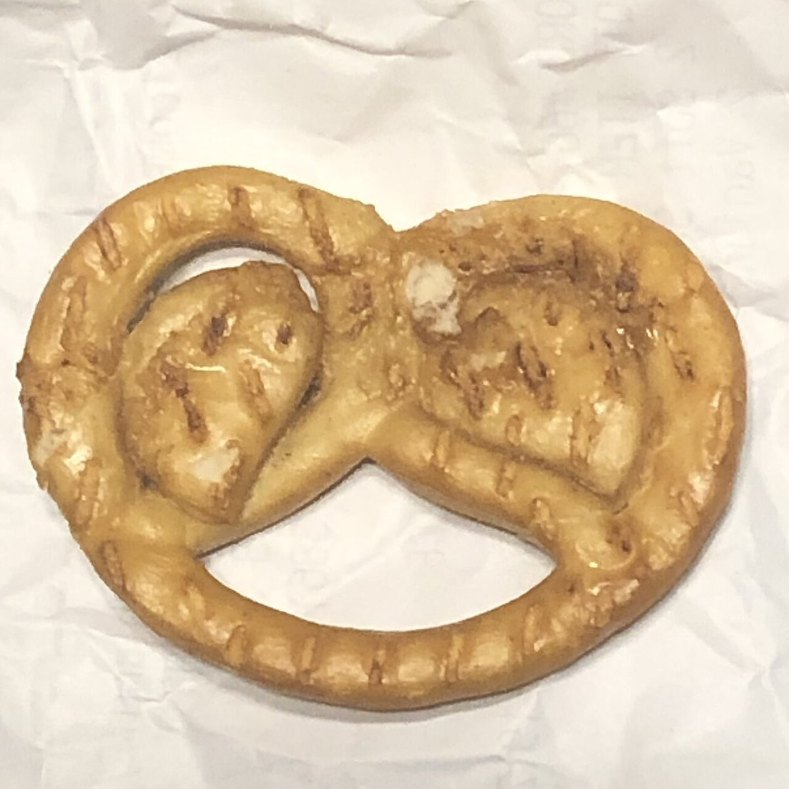

45° / メニュー
メニュー
メニューと価格は準備中です。確認でき次第、こちらに掲載します。
| メニュー | 準備中 |
|---|---|
| 価格 | 準備中 |
| ご予約 | 準備中 |
下の写真は、パンまわりのかたちを伝えるためのフリー素材です。お店で提供しているものではなく、提供メニューを示すものでもありません。


表と裏の二枚
45°-45°-90°の三角定規は、2枚合わせると正方形になります。同じ一つのものを表と裏から並べた写真で、そのかたちを表しました。


45° / メニュー
メニューと価格は準備中です。確認でき次第、こちらに掲載します。
| メニュー | 準備中 |
|---|---|
| 価格 | 準備中 |
| ご予約 | 準備中 |
下の写真は、パンまわりのかたちを伝えるためのフリー素材です。お店で提供しているものではなく、提供メニューを示すものでもありません。


45°-45°-90°の三角定規は、2枚合わせると正方形になります。同じ一つのものを表と裏から並べた写真で、そのかたちを表しました。